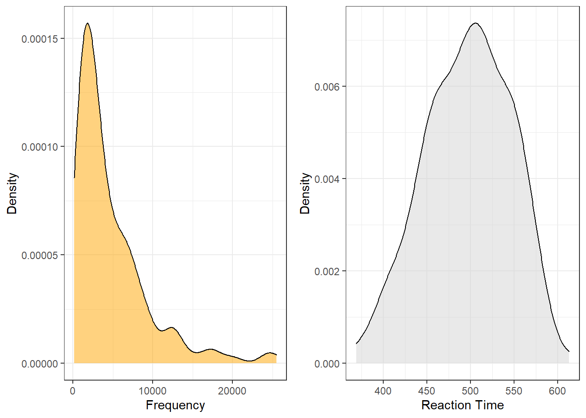

Week 8 Basic Inferential Statistics
This tutorial introduces basic inferential procedures for null-hypothesis hypothesis testing. AS such, this tutorial aims at discussing basic concepts of inferential statistics, explaining the conceptual underpinnings of the most commonly used tests (such as t-tests and \(\chi^2\)-tests), and showcasing how to implement these statistical tests in R.
We start the tutorial by getting to know the most common test used in the language sciences to perform null-hypothesis hypothesis testing: (Pearsons’s) \(\chi\)2 test. The next part of this tutorial then focuses on independent and dependent t-tests which are the most basic parametric test while the last part of the tutorial introduces the Mann-Whitney U -test which is a rank-based test.
(Pearsons’s) Chi-Square Test
One of the most frequently used statistical test in linguistics is the \(\chi\)2 test (or Pearsons’s chi-square test, chi-squared test, or chi-square test). We will use a simple, practical example to explore how this test works. In this example, we will test whether speakers of American English (AmE) and speakers of British English (BrE) differ in their use of the near-synonyms sort of and kind of as in “He’s sort of stupid” and “He’s kind of stupid”. As a first step, we formulate the hypothesis that we want to test (H1) and its null hypothesis (H0). The alternative- or test hypothesis reads:
H1: Speakers of AmE and BrE differ with respect to their preference for sort of and kind of.
while the Null Hypothesis (H0) states
H0: Speakers of AmE and BrE do not differ with respect to their preference for sort of and kind of.
The H0 claims the non-existence of something (which is the more conservative position) and in our example the non-existence of a correlation between variety of English and the use of sort of and kind of. The question now arises what has to be the case in order to reject the H0 in favor of the H1.
To answer this question, we require information about the probability of error, i.e. the probability that the H0 does indeed hold for the entire population. Before performing the chi-square test, we follow the convention that the required significance level is 5 percent. In other words, we will reject the H0 if the likelihood for the H\(_{0}\) being true is less than 5 percent given the distribution of the data. In that case, i.e. in case that the likelihood for the H0 being true is less than 5 percent, we consider the result of the chi-square test as statistically significant. This means that the observed distribution makes it very unlikely that there is no correlation between the variety of English and the use of sort of and kind of.
Let us now assume that we have performed a search for sort of and kind of in two corpora representing American and British English and that we have obtained the following frequencies:
Hedge | BrE | AmE |
kindof | 181 | 655 |
sortof | 177 | 67 |
In a first step, we now have to calculate the row and column sums of our table.
Hedge | BrE | AmE | Total |
kindof | 181 | 655 | 836 |
sortof | 177 | 67 | 244 |
Total | 358 | 722 | 1,080 |
Next, we calculate, the values that would have expected if there was no correlation between variety of English and the use of sort of and kind of. In order to get these expected frequencies, we apply the equation below to all cells in our table.
\[\begin{equation} \frac{Column total*Row total}{Overall total} \end{equation}\]
In our example this means that for the cell with [+]BrE [+]kindof we get:
\[\begin{equation} \frac{836*358}{1080} = \frac{299288}{1080} = 277.1185 \end{equation}\]
For the entire table this means we get the following expected values:
Hedge | BrE | AmE | Total |
kindof | 277.11850 | 558.8815 | 836 |
sortof | 80.88148 | 163.1185 | 244 |
Total | 358.00000 | 722.0000 | 1,080 |
In a next step, we calculate the contribution of each cell to the overall \(\chi\)2 value (\(\chi\)2 contribution). To get \(\chi\)2 contribution for each cell, we apply the equation below to each cell.
\[\begin{equation} \frac{(observed – expected)^{2}}{expected} \end{equation}\]
In our example this means that for the cell with [+]BrE [+]kindof we get:
\[\begin{equation} \frac{(181 – 277.1185)^{2}}{277.1185} = \frac{-96.1185^{2}}{277.1185} = \frac{9238.766}{277.1185} = 33.33868 \end{equation}\]
For the entire table this means we get the following \(\chi^{2}\) values:
Hedge | BrE | AmE | Total |
kindof | 33.33869 | 16.53082 | 49.86951 |
sortof | 114.22602 | 56.63839 | 170.86440 |
Total | 147.56470 | 73.16921 | 220.73390 |
The sum of \(\chi\)2 contributions in our example is 220.7339. To see if this value is statistically significant, we need to calculate the degrees of freedom because the \(\chi\) distribution differs across degrees of freedom. Degrees of freedom are calculated according to the equation below.
\[\begin{equation} DF = (rows -1) * (columns – 1) = (2-1) * (2-1) = 1 * 1 = 1 \end{equation}\]
In a last step, we check whether the \(\chi\)2 value that we have calculated is higher than a critical value (in which case the correlation in our table is significant). Degrees of freedom are relevant here because the critical values are dependent upon the degrees of freedom: the more degrees of freedom, the higher the critical value, i.e. the harder it is to breach the level of significance.
Since there is only 1 degree of freedom in our case, we need to consider only the first column in the table of critical values below.
DF | p<.05 | p<.01 | p<.001 |
1 | 3.84 | 6.64 | 10.83 |
2 | 5.99 | 9.21 | 13.82 |
3 | 7.82 | 11.35 | 16.27 |
4 | 9.49 | 13.28 | 18.47 |
5 | 11.07 | 15.09 | 20.52 |
Since the \(\chi\)2 value that we have calculated is much higher than the critical value provided for p<.05, we can reject the H0 and may now claim that speakers of AmE and BrE differ with respect to their preference for sort of and kind of.
Before we summarize the results, we will calculate the effect size which is a measure for how strong the correlations are.
Effect Sizes in Chi-Square
Effect sizes are important because they correlations may be highly significant but the effect between variables can be extremely weak. The effect size is therefore a measure how strong the correlation or the explanatory and predictive power between variables is.
The effect size measure for \(\chi\)2 tests can be either the \(\phi\)-coefficient (phi-coefficient) or Cramer’s \(\phi\) (Cramer’s phi). The \(\phi\)-coefficient is used when dealing with 2x2 tables while Cramer’s \(\phi\) is used when dealing with tables with more than 4 cells. The \(\phi\) coefficient can be calculated by using the equation below (N = overall sample size).
\[\begin{equation} \phi = \sqrt{\frac{\chi^{2}}{N}} \end{equation}\]
In our case, this means:
\[\begin{equation} \phi = \sqrt{\frac{220.7339}{1080}} = \sqrt{0.2043832} = 0.4520876 \end{equation}\]
The \(\phi\) coefficient varies between 0 (no effect) and 1 (perfect correlation). For the division into weak, moderate and strong effects one can follow the division for \(\omega\) (small omega), so that with values beginning with .1 represent weak, values between 0.3 and .5 represent moderate and values above .5 represent strong effects (Bühner and Ziegler 2009, 266). So, in this example we are dealing with a medium-sized effect/correlation.
Chi-Square in R
Before we summarize the results, we will see how to perform a chi-square test in R. In addition to what we have done above, we will also visualize the data. To begin with, we will have a look at the data set (which is the same data we have used above).
Hedge | BrE | AmE |
kindof | 181 | 655 |
sortof | 177 | 67 |
We will now visualize the data with an association. Bars above the dashed line indicate that a feature combination occurs more frequently than expected by chance. The width of the bars indicates the frequency of the feature combination.
assocplot(as.matrix(chidata)) # association plot
The fact that the bars are distributed complimentary (top left red and below bar; top right black above bar; bottom left black above bar; bottom right red below bar) indicates that the use of sort of and kind of differs across AmE and BrE. We will check whether the mosaic plot confirms this impression.
mosaicplot(chidata, shade = TRUE, type = "pearson", main = "") # mosaic plotThe color contrasts in the mosaic plot substantiate the impression that the two varieties of English differ significantly. To ascertain whether the differences are statistically significant, we can now apply the chi-square test.
# perform chi square test without Yate's correction
chisq.test(chidata, corr = F) ##
## Pearson's Chi-squared test
##
## data: chidata
## X-squared = 220.73, df = 1, p-value < 2.2e-16The results reported by R are identical to the results we derived by hand and confirm that BrE and AmE differ significantly in their use of sort of and kind of.
NOTE
When conducting a \(\chi\)2 test of independence and in order to interpret the Pearson’s \(\chi\)2 statistic, by default, most of the statistical packages, including R, assume that the observed frequencies in a contingency table can be approximated by the continuous \(\chi\)2 distribution.
To avoid-reduce the error that the approximation introduces, the chisq.test function in base R includes the correct argument that, by default, is set to TRUE. This argument integrates the Frank Yate’s adjustment that aims at compensating for deviations from the (smooth) theoretical chi-squared distribution and it is considered especially useful if the frequency in each cell is less than a small number. Some statisticians set this number to 5 and others to 10.
Although this case scenario is relevant to linguistic data, this is not always the case. Moreover, there is a strong tendency in other fields to avoid the Yates’ continuity correction altogether due to the overestimated amount of adjustment that it introduces. That is why, it is helpful to know how to avoid the Yates’ continuity correction. To do that, you simply set the correct argument to FALSE, as follows (see also above):
# X2-test without Yate's correction
chisq.test(chidata, correct=FALSE)Also, in case you would like to deactivate the scientific notation used for displaying the p-value, as it is displayed in the output of the chisq.test function, you can do the following:
format(chisq.test(chidata)$p.value, scientific=FALSE)
In a next step, we calculate the effect size.
# calculate effect size
sqrt(chisq.test(chidata, corr = F)$statistic / sum(chidata) * (min(dim(chidata))-1))## X-squared
## 0.4520877The \(\phi\) coefficient of .45 shows that variety of English correlates moderately with the use of sort of and kind of. We will now summarize the results.
Summarizing Chi-Square Results
The results of our analysis can be summarized as follows: A \(\chi\)2-test confirms a highly significant correlation of moderate size between the variety of English and the use of the near-synonymous hedges sort of and kind of (\(\chi\)2 = 220.73, df = 1, p < .001***, \(\phi\) = .452).
Requirements of Chi-Square
Chi-square tests depend on certain requirements that, if violated, negatively affect the reliability of the results of the test. To provide reliable results, 80 percent of cells in a table to which the chi-square test is applied have to have expected values of 5 or higher and at most 20 percent of expected values can be smaller than 5 (see Bortz, Lienert, and Boehnke 1990, 98). In addition, none of the expected values can be smaller than 1 (see Bortz, Lienert, and Boehnke 1990, 136) because then, the estimation, which relies on the \(\chi\)2-distribution, becomes too imprecise to allow meaningful inferences (Cochran 1954).
If these requirements are violated, then the Fisher’s Exact Test is more reliable and offers the additional advantage that these tests can also be applied to data that represent very small sample sizes. When applying the Fisher’s Exact Test, the probabilities for all possible outcomes are calculated and the summed probability for the observed or more extreme results are determined. If this sum of probabilities exceeds five percent, then the result is deemed statistically significant.
Student’s t-test
There are two basic types of t-tests: the dependent or paired t-test and the independent t-test. Paired t-test are used when the data points are not independent, for example, because they come form the same subjects in a pre-post test design. In contrast, Independent t-tests are used when the data points are independent and come from two different groups (e.g., from learners and native speakers or from men and women).
The assumptions of the Student’s t-test are that
- the dependent variable is a continuous, numeric variable;
- the independent variable is a nominal variable (two levels / groups)
- the variances within each group are approximately normal;
- the errors within each group are approximately normal (this implies that the distributions of the scores of each group are approximately normal).
If the variances are not normal, then this indicates that another important variable is confounding the results. In such cases, you should go back to the data and check what other variable could cause the unequal variances. If you decide to proceed with the analysis, you can switch to a Welch t-test which does not assume equal variances within each group.
Paired t-test
Paired t-tests take into account that the scores (or values) come from the same individuals in two conditions (e.g. before and after a treatment).There are two equations for the paired t-test that are used.
\[\begin{equation} t = \frac{\sum D}{\sqrt{\frac{N \sum D^2 - (\sum D)^2}{N-1}}} \end{equation}\]
or
\[\begin{equation} t = \frac{\bar D}{\frac{s_D}{\sqrt{N}}} \end{equation}\]
To show how a paired t-tests works, we will test if a treatment (a teaching method) reduces the number of spelling errors in a long essay of 6 students. In a first step, we generate some data representing the errors in two essays of the same length written before and after the teaching method was used for 8 weeks.
Pretest <- c(78, 65, 71, 68, 76, 59)
Posttest <- c(71, 62, 70, 60, 66, 48)
ptd <- data.frame(Pretest, Posttest)The data look like as shown in the table below.
Pretest | Posttest |
78 | 71 |
65 | 62 |
71 | 70 |
68 | 60 |
76 | 66 |
59 | 48 |
To perform a paired t-test in R, we use the t.test function and specify the argument paired as TRUE.
t.test(ptd$Pretest,
ptd$Posttest,
paired=TRUE,
conf.level=0.95)##
## Paired t-test
##
## data: ptd$Pretest and ptd$Posttest
## t = 4.1523, df = 5, p-value = 0.00889
## alternative hypothesis: true mean difference is not equal to 0
## 95 percent confidence interval:
## 2.539479 10.793854
## sample estimates:
## mean difference
## 6.666667In addition to testing if the groups differ significantly, we also want to calculate the effect size of the difference. We can use the effectsize package to extract Cohen’s \(d\) which is the standard effect size measure for t-tests.
effectsize::cohens_d(x = ptd$Pretest,
y = ptd$Posttest,
paired = TRUE)## Cohen's d | 95% CI
## ------------------------
## 1.70 | [0.41, 3.25]To check if the effect is small or big - that is if a Cohen’s \(d\) value can be interpreted as being small or big, we can use the following overview.
EffectSize | d | Reference |
Very small | 0.01 | Sawilowsky (2009) |
Small | 0.20 | Cohen (1988) |
Medium | 0.50 | Cohen (1988) |
Large | 0.80 | Cohen (1988) |
Very large | 1.20 | Sawilowsky (2009) |
Huge | 2.00 | Sawilowsky (2009) |
The classification combines Sawilowsky (2009) and Cohen (1988). The analysis can be summarized using the reports package (Makowski et al. 2021) as follows.
report::report(t.test(ptd$Pretest,ptd$Posttest, paired=TRUE, conf.level=0.95))##
##
## The Paired t-test testing the difference between ptd$Pretest and ptd$Posttest (mean difference = 6.67) suggests that the effect is positive, statistically significant, and large (difference = 6.67, 95% CI [2.54, 10.79], t(5) = 4.15, p = 0.009; Cohen's d = 1.70, 95% CI [0.41, 3.25])We can use this output to write up a final report:
A paired t-test test was applied to the data and it confirmed that the number of spelling errors after the 8 weeks of using the new teaching method significantly decreased (t5: 4.1523, p = .009**). The treatment had a very large, statistically significant, positive effect (Cohen’s \(d\) = 1.70 [CIs: 0.41, 3.25]) (cf. Sawilowsky 2009).
Independent t-tests
Independent t-tests are used very widely and they determine if the means of two groups are significantly different. As such, t-tests are used when we have a normally distributed (or parametric), numeric dependent variable and a nominal predictor variable.
\[\begin{equation} t = \frac{\bar X_1 - \bar X_2}{\sqrt{\frac{s^2_p}{N_1} + \frac{s^2_p}{N_2}}} \end{equation}\]
where
\[\begin{equation} s^2_p = \frac{(N_1 - 1)s^2_1 + (N_2 - 1)s^2_2}{N_1 + N_2 - 2} \end{equation}\]
We now load some data that we can apply a t-test to. The data represents scores on a proficiency test of native speakers and learners of English. We want to use a t-test to determine if the native speakers and learners differ in their proficiency.
# load data
tdata <- base::readRDS(url("https://slcladal.github.io/data/d03.rda", "rb")) %>%
dplyr::rename(NativeSpeakers = 1,
Learners = 2) %>%
tidyr::gather(Group, Score, NativeSpeakers:Learners) %>%
dplyr::mutate(Group = factor(Group))Group | Score |
NativeSpeakers | 6 |
NativeSpeakers | 65 |
NativeSpeakers | 12 |
NativeSpeakers | 56 |
NativeSpeakers | 45 |
NativeSpeakers | 84 |
NativeSpeakers | 38 |
NativeSpeakers | 46 |
NativeSpeakers | 64 |
NativeSpeakers | 24 |
We now apply an independent t-test to the data.
t.test(Score ~ Group,
var.equal = T,
data = tdata)##
## Two Sample t-test
##
## data: Score by Group
## t = -0.054589, df = 18, p-value = 0.9571
## alternative hypothesis: true difference in means between group Learners and group NativeSpeakers is not equal to 0
## 95 percent confidence interval:
## -19.74317 18.74317
## sample estimates:
## mean in group Learners mean in group NativeSpeakers
## 43.5 44.0As the p-value is higher than .05, we cannot reject the H-0- and we thus have to conclude that our evidence does not suffice to say that learners and Native Speakers differ in their proficiency. However, we still extract the effect size, again using Cohen’s \(d\). In contract to the extraction of the effect size for paired t-tests, however, we will set the argument paired to FALSE (in fact, we could simply leave it out as the paired = FALSE is the default).
effectsize::cohens_d(tdata$Score ~ tdata$Group,
paired = FALSE)## Cohen's d | 95% CI
## -------------------------
## -0.02 | [-0.90, 0.85]
##
## - Estimated using pooled SD.The analysis can be summarized using the reports package (Makowski et al. 2021) as follows.
report::report(t.test(Score ~ Group, var.equal = T, data = tdata))##
##
## The Two Sample t-test testing the difference of Score by Group (mean in group Learners = 43.50, mean in group NativeSpeakers = 44.00) suggests that the effect is negative, statistically not significant, and very small (difference = -0.50, 95% CI [-19.74, 18.74], t(18) = -0.05, p = 0.957; Cohen's d = -0.03, 95% CI [-0.95, 0.90])We can use this output to write up a final report:
An independent t-test test was applied to the data and it reported that the scores between the two groups did not differ significantly (t18: -0.0546, p = .9571). In addition to not differing significantly, the effect size of the difference between the groups was also very small (Cohen’s \(d\) = -0.03 [CIs: -0.95, 0.90]) (cf. Sawilowsky 2009).
Mann-Whitney U-Test
It is actually quite common that numeric depend variables need to be transformed or converted into ranks, i.e. ordinal variables, because the distribution of residuals does not allow the application of parametric tests such as t-tests or linear regression. In such cases, as we are dealing with rank (ordinal) data, the application of a chi-square test is unwarranted and we need to use another test. There are different alternatives depending on whether the data are paired (coming from the same individuals) or if all observations are independent.
The non-parametric alternative for independent t-tests, i.e. for data where we are dealing with two separate groups and a numeric dependent variable that violates parametric assumptions (or an ordinal dependent variable), is the Mann-Whitney U-test. In contrast, if the groups under investigation represent identical participants that are tested under two conditions, the appropriate alternative is a Wilcoxon Signed Rank test (which is thus the alternative for paired t-test).
Imagine we wanted to determine if two language families differed with respect to the size of their phoneme inventories. You have already ranked the inventory sizes and would now like to now if language family correlates with inventory size. As such, we are dealing with two independent groups and we want to implement a non-parametric alternative of a t-test. To answer this question, you create the table shown below.
# create table
Rank <- c(1,3,5,6,8,9,10,11,17,19, 2,4,7,12,13,14,15,16,18,20)
LanguageFamily <- c(rep("Kovati", 10), rep("Urudi", 10))
lftb <- data.frame(LanguageFamily, Rank)LanguageFamily | Rank |
Kovati | 1 |
Kovati | 3 |
Kovati | 5 |
Kovati | 6 |
Kovati | 8 |
Kovati | 9 |
Kovati | 10 |
Kovati | 11 |
Kovati | 17 |
Kovati | 19 |
Urudi | 2 |
Urudi | 4 |
Urudi | 7 |
Urudi | 12 |
Urudi | 13 |
Urudi | 14 |
Urudi | 15 |
Urudi | 16 |
Urudi | 18 |
Urudi | 20 |
We will also briefly inspect the data visually using a box plot.
library(ggplot2)
ggplot(lftb, aes(x = LanguageFamily, y = Rank, fill = LanguageFamily)) +
geom_boxplot() +
scale_fill_manual(values = c("orange", "darkgrey")) +
theme_bw() +
theme(legend.position = "none")To use the Mann-Whitney U test, the dependent variable (Rank) must be ordinal and independent variable (Group) must be a binary factor. We briefly check this by inspecting the structure of the data.
# inspect structure
str(lftb)## 'data.frame': 20 obs. of 2 variables:
## $ LanguageFamily: chr "Kovati" "Kovati" "Kovati" "Kovati" ...
## $ Rank : num 1 3 5 6 8 9 10 11 17 19 ...As the variables are what we need them to be, we can now perform the Mann-Whitney U test on the table. The null hypothesis is that there is no difference between the 2 groups.
# perform test
wilcox.test(lftb$Rank ~ lftb$LanguageFamily) ##
## Wilcoxon rank sum exact test
##
## data: lftb$Rank by lftb$LanguageFamily
## W = 34, p-value = 0.2475
## alternative hypothesis: true location shift is not equal to 0Since the p-value is greater than 0.05, we fail to reject the null hypothesis. The results of the Mann-Whitney U test tell us that the two language families do not differ significantly with respect to their phoneme inventory size.
The analysis can be summarized using the reports package (Makowski et al. 2021) as follows.
report::report(wilcox.test(lftb$Rank ~ lftb$LanguageFamily))##
##
## The Wilcoxon rank sum exact test testing the difference in ranks between lftb$Rank and lftb$LanguageFamily suggests that the effect is negative, statistically not significant, and large (W = 34.00, p = 0.247; r (rank biserial) = -0.32, 95% CI [-0.69, 0.18])We can use this output to write up a final report:
The Wilcoxon rank sum exact test suggests that there is no statistically significant relationship between the size of phoneme inventories and being member of selected language families. Despite being statistically insignificant, the effect may be large (W = 34.00, p = 0.247; r (rank biserial) = -0.32, 95% CI [-0.69, 0.18]).
Mann-Whitney U tests with continuity correction
The Mann-Whitney U test can also be used with continuity correction. A continuity correction is necessary when both variables represent numeric values that are non-normal. In the following example, we want to test if the reaction time for identifying a word as real is correlated with its token frequency.
For this example, we generate data is deliberately non-normal.
Frequency | NormalizedReaction | Reaction |
20,000 | 1,533.6 | 44 |
10,000 | 2,235.8 | 20 |
6,667 | 1,556.4 | 165 |
5,000 | 2,180.7 | 256 |
4,000 | 1,647.8 | 480 |
3,333 | 1,989.9 | 246 |
2,857 | 2,250.7 | 56 |
2,500 | 1,471.7 | 160 |
2,222 | 1,589.8 | 9 |
2,000 | 1,288.5 | 450 |
When we plot the data, we see that both the frequency of words (Frequency) and the reaction times that it took subjects to recognize the token as a word (Reaction) are non-normal (in this case, the distributions are negative skewed).

Both variables are negatively skewed (non-normally distributed) but we can use the wilcox.test function to perform the Mann-Whitney U test with continuity correction which takes the skewness into account. The null hypothesis is that there is no difference between the 2 groups. Although the output states that the test that was performed is a Wilcoxon rank sum test with continuity correction, we have actually performed a Mann-Whitney U test - this is because the nomenclature for the tests is not unanimous.
# perform test
wilcox.test(wxdata$Reaction, wxdata$Frequency) ##
## Wilcoxon rank sum test with continuity correction
##
## data: wxdata$Reaction and wxdata$Frequency
## W = 7693.5, p-value = 4.703e-11
## alternative hypothesis: true location shift is not equal to 0Again, we use the reports package (Makowski et al. 2021) to summarize the analysis.
report::report(wilcox.test(wxdata$Reaction, wxdata$Frequency))##
##
## The Wilcoxon rank sum test with continuity correction testing the difference in ranks between wxdata$Reaction and wxdata$Frequency suggests that the effect is positive, statistically significant, and very large (W = 7693.50, p < .001; r (rank biserial) = 0.54, 95% CI [0.42, 0.64])We can use this output to write up a final report:
The Wilcoxon rank sum exact test suggests that there is a strong, positive, statistically significant relationship between the reaction time for identifying a word as real and its token frequency (W = 7613.50, p < .001; r (rank biserial) = 0.52, 95% CI [0.40, 0.63]).